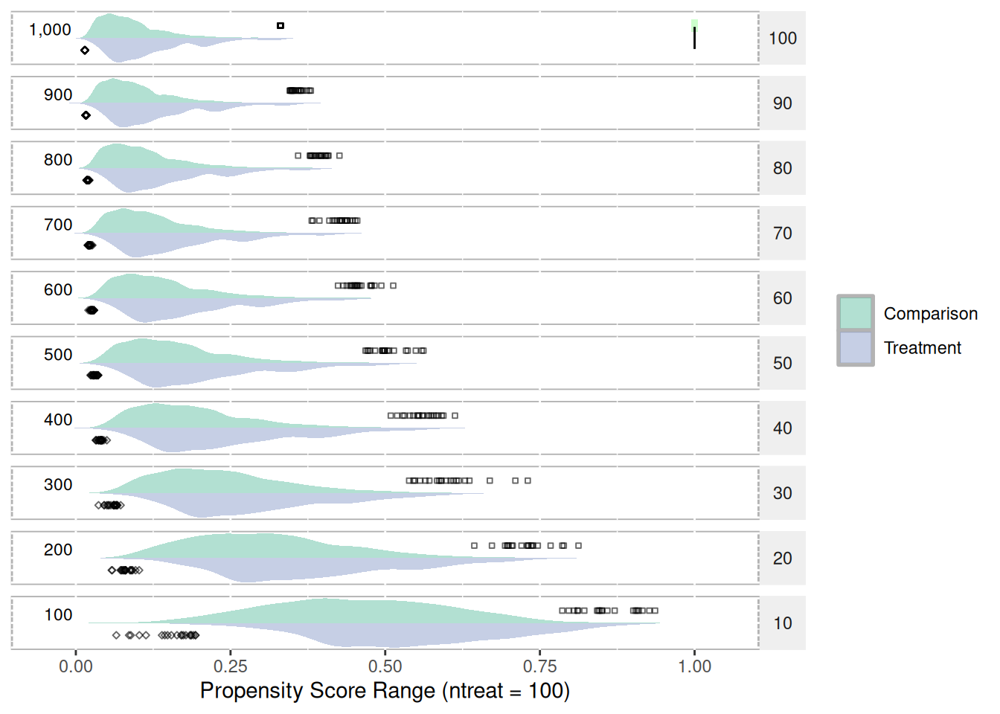
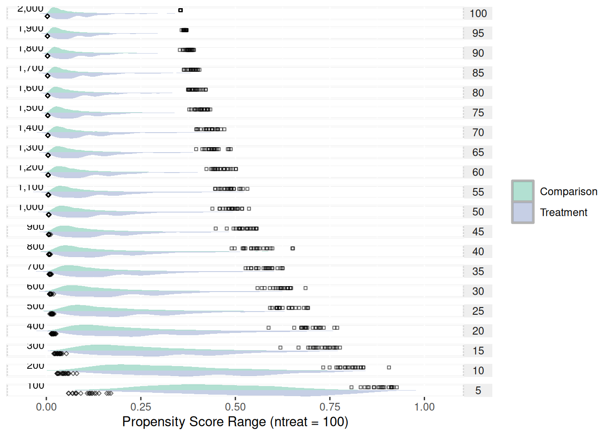
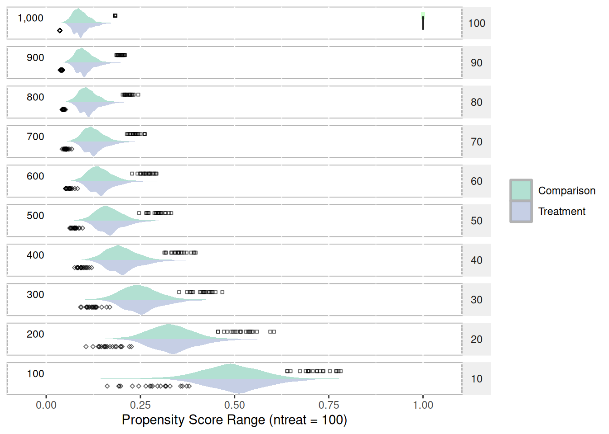
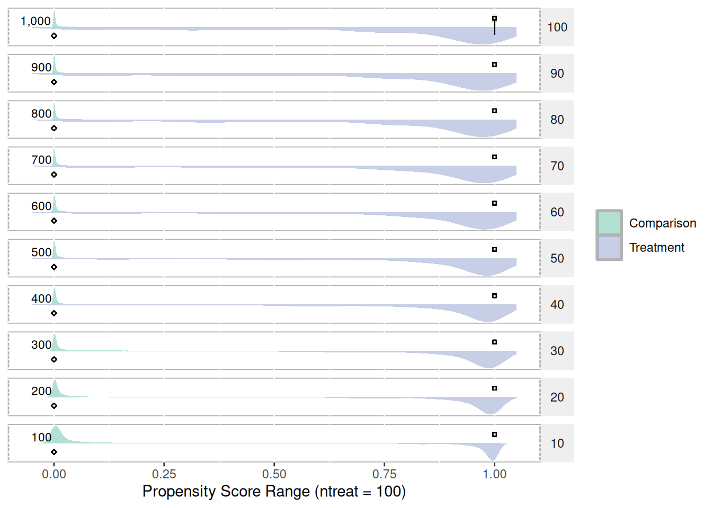
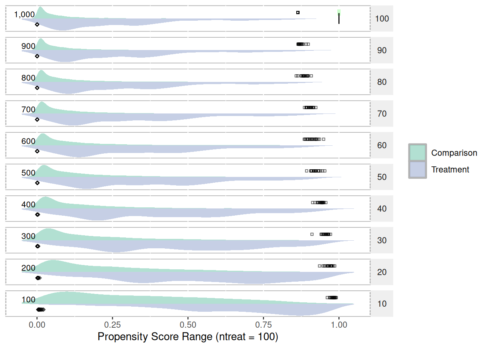

B Propensity Score Ranges
With regard to propensity score ranges, the range tends to shrink as the ratio of treatment-to-control increases. Figure 20 depicts the range and distribution of propensity scores (using logistic regression) with varying treatment-to-control ratios. The data used to create this figure is simulated and available in Appendix K. The psrange and plot.psrange functions are included in the multilevelPSA R package. Propensity scores are estimated with a single covariate where the mean for the treatment and control are 0.6 and 0.4, respectively. The standard deviation for both is 0.4. There are 100 treatment units and 1,000 control units simulated. The goal in choosing these means and standard deviations is to have some separation between treatment and control. Each row in the figure represents the percentage of control units sampled before estimating the propensity scores, starting with 100% (i.e. all 1,000 control units) to 10% (100 of the control units). As the figure shows, as the ratio decreases to where there are equal treatment and control units, the range of the propensity scores becomes more normal. To calculate the ranges, each sampling step is bootstrapped so the green bar and black points represent each of the 20 bootstrap samples taken. The bars then represent the mean of the minimum and mean of the maximum for each step.
The “shrinking” of propensity score ranges as the ratio of treatment-to-control increases has implications for the interpretation of propensity scores. Typically, propensity scores are interpreted as the probability of being in the treatment. For studies where the number of treatment and control units are roughly equal, this interpretation is valid. However, in cases where the ratio of treatment-to-control is large, it best to simply interpret the propensity scores as adjustment scores and not probabilities. Since the matching and stratification procedures utilize standard scores (i.e. the propensity score divided by the standard deviation of the propensity scores), should only impact interpretation of the propensity scores and should not impact on the estimated treatment e↵ects. It appears this issue has not been explored in either the PSA or logistic regression literature and additional exploration of the topic appears to be warranted.
library(multilevelPSA)
getSimulatedData <- function(nvars = 3, ntreat = 100, treat.mean = 0.6, treat.sd = 0.5,
ncontrol = 1000, control.mean = 0.4, control.sd = 0.5) {
if (length(treat.mean) == 1) {
treat.mean = rep(treat.mean, nvars)
}
if (length(treat.sd) == 1) {
treat.sd = rep(treat.sd, nvars)
}
if (length(control.mean) == 1) {
control.mean = rep(control.mean, nvars)
}
if (length(control.sd) == 1) {
control.sd = rep(control.sd, nvars)
}
df <- c(rep(0, ncontrol), rep(1, ntreat))
for (i in 1:nvars) {
df <- cbind(df, c(rnorm(ncontrol, mean = control.mean[1], sd = control.sd[1]),
rnorm(ntreat, mean = treat.mean[1], sd = treat.sd[1])))
}
df <- as.data.frame(df)
names(df) <- c("treat", letters[1:nvars])
return(df)
}1:10 (100 treatments, 1000 control units)
test.df1 <- getSimulatedData(ntreat = 100, ncontrol = 1000)
psranges1 <- psrange(test.df1, test.df1$treat, treat ~ ., samples = seq(100,
1000, by = 100), nboot = 20)
plot(psranges1)
summary(psranges1)## p ntreat ncontrol ratio min.mean min.sd min.median min.se min.min
## 1 10 100 100 1 10.5 5.9160798 10.5 1.3228757 1
## 21 20 100 200 2 10.5 5.9160798 10.5 1.3228757 1
## 41 30 100 300 3 10.5 5.9160798 10.5 1.3228757 1
## 61 40 100 400 4 10.5 5.9160798 10.5 1.3228757 1
## 81 50 100 500 5 10.5 5.9160798 10.5 1.3228757 1
## 101 60 100 600 6 10.5 5.9160798 10.5 1.3228757 1
## 121 70 100 700 7 10.5 5.9160798 10.5 1.3228757 1
## 141 80 100 800 8 10.5 5.9160798 10.5 1.3228757 1
## 161 90 100 900 9 10.5 5.9160798 10.5 1.3228757 1
## 181 100 100 1000 10 1.6 0.5026247 2.0 0.1123903 1
## min.max max.mean max.sd max.median max.se max.min max.max
## 1 20 10.5 5.91608 10.5 1.322876 1 20
## 21 20 10.5 5.91608 10.5 1.322876 1 20
## 41 20 10.5 5.91608 10.5 1.322876 1 20
## 61 20 10.5 5.91608 10.5 1.322876 1 20
## 81 20 10.5 5.91608 10.5 1.322876 1 20
## 101 20 10.5 5.91608 10.5 1.322876 1 20
## 121 20 10.5 5.91608 10.5 1.322876 1 20
## 141 20 10.5 5.91608 10.5 1.322876 1 20
## 161 20 10.5 5.91608 10.5 1.322876 1 20
## 181 2 1.0 0.00000 1.0 0.000000 1 11:20 (100 treatments, 2000 control units)
test.df2 <- getSimulatedData(ncontrol = 2000)
psranges2 <- psrange(test.df2, test.df2$treat, treat ~ ., samples = seq(100,
2000, by = 100), nboot = 20)
plot(psranges2)
summary(psranges2)## p ntreat ncontrol ratio min.mean min.sd min.median min.se min.min
## 1 5 100 100 1 10.50 5.9160798 10.5 1.3228757 1
## 21 10 100 200 2 10.50 5.9160798 10.5 1.3228757 1
## 41 15 100 300 3 10.50 5.9160798 10.5 1.3228757 1
## 61 20 100 400 4 10.50 5.9160798 10.5 1.3228757 1
## 81 25 100 500 5 10.50 5.9160798 10.5 1.3228757 1
## 101 30 100 600 6 10.50 5.9160798 10.5 1.3228757 1
## 121 35 100 700 7 10.50 5.9160798 10.5 1.3228757 1
## 141 40 100 800 8 10.50 5.9160798 10.5 1.3228757 1
## 161 45 100 900 9 10.50 5.9160798 10.5 1.3228757 1
## 181 50 100 1000 10 10.50 5.9160798 10.5 1.3228757 1
## 201 55 100 1100 11 10.50 5.9160798 10.5 1.3228757 1
## 221 60 100 1200 12 10.50 5.9160798 10.5 1.3228757 1
## 241 65 100 1300 13 10.50 5.9160798 10.5 1.3228757 1
## 261 70 100 1400 14 10.50 5.9160798 10.5 1.3228757 1
## 281 75 100 1500 15 10.50 5.9160798 10.5 1.3228757 1
## 301 80 100 1600 16 10.50 5.9160798 10.5 1.3228757 1
## 321 85 100 1700 17 10.50 5.9160798 10.5 1.3228757 1
## 341 90 100 1800 18 10.50 5.9160798 10.5 1.3228757 1
## 361 95 100 1900 19 10.50 5.9160798 10.5 1.3228757 1
## 381 100 100 2000 20 2.55 0.8255779 3.0 0.1846048 1
## min.max max.mean max.sd max.median max.se max.min max.max
## 1 20 10.50 5.9160798 10.5 1.3228757 1 20
## 21 20 10.50 5.9160798 10.5 1.3228757 1 20
## 41 20 10.50 5.9160798 10.5 1.3228757 1 20
## 61 20 10.50 5.9160798 10.5 1.3228757 1 20
## 81 20 10.50 5.9160798 10.5 1.3228757 1 20
## 101 20 10.50 5.9160798 10.5 1.3228757 1 20
## 121 20 10.50 5.9160798 10.5 1.3228757 1 20
## 141 20 10.50 5.9160798 10.5 1.3228757 1 20
## 161 20 10.50 5.9160798 10.5 1.3228757 1 20
## 181 20 10.50 5.9160798 10.5 1.3228757 1 20
## 201 20 10.50 5.9160798 10.5 1.3228757 1 20
## 221 20 10.50 5.9160798 10.5 1.3228757 1 20
## 241 20 10.50 5.9160798 10.5 1.3228757 1 20
## 261 20 10.50 5.9160798 10.5 1.3228757 1 20
## 281 20 10.50 5.9160798 10.5 1.3228757 1 20
## 301 20 10.50 5.9160798 10.5 1.3228757 1 20
## 321 20 10.50 5.9160798 10.5 1.3228757 1 20
## 341 20 10.50 5.9160798 10.5 1.3228757 1 20
## 361 20 10.50 5.9160798 10.5 1.3228757 1 20
## 381 4 1.35 0.4893605 1.0 0.1094243 1 2100 treatments, 1000 control units, equal means and standard deviations
test.df3 <- getSimulatedData(ncontrol = 1000, treat.mean = 0.5, control.mean = 0.5)
psranges3 <- psrange(test.df3, test.df3$treat, treat ~ ., samples = seq(100,
1000, by = 100), nboot = 20)
plot(psranges3)
summary(psranges3)## p ntreat ncontrol ratio min.mean min.sd min.median min.se min.min
## 1 10 100 100 1 10.5 5.9160798 10.5 1.3228757 1
## 21 20 100 200 2 10.5 5.9160798 10.5 1.3228757 1
## 41 30 100 300 3 10.5 5.9160798 10.5 1.3228757 1
## 61 40 100 400 4 10.5 5.9160798 10.5 1.3228757 1
## 81 50 100 500 5 10.5 5.9160798 10.5 1.3228757 1
## 101 60 100 600 6 10.5 5.9160798 10.5 1.3228757 1
## 121 70 100 700 7 10.5 5.9160798 10.5 1.3228757 1
## 141 80 100 800 8 10.5 5.9160798 10.5 1.3228757 1
## 161 90 100 900 9 10.5 5.9160798 10.5 1.3228757 1
## 181 100 100 1000 10 1.3 0.4701623 1.0 0.1051315 1
## min.max max.mean max.sd max.median max.se max.min max.max
## 1 20 10.5 5.91608 10.5 1.322876 1 20
## 21 20 10.5 5.91608 10.5 1.322876 1 20
## 41 20 10.5 5.91608 10.5 1.322876 1 20
## 61 20 10.5 5.91608 10.5 1.322876 1 20
## 81 20 10.5 5.91608 10.5 1.322876 1 20
## 101 20 10.5 5.91608 10.5 1.322876 1 20
## 121 20 10.5 5.91608 10.5 1.322876 1 20
## 141 20 10.5 5.91608 10.5 1.322876 1 20
## 161 20 10.5 5.91608 10.5 1.322876 1 20
## 181 2 1.0 0.00000 1.0 0.000000 1 1100 treatments, 1000 control units, very little overlap
test.df4 <- getSimulatedData(ncontrol = 1000, treat.mean = 0.25, treat.sd = 0.3,
control.mean = 0.75, control.sd = 0.3)
psranges4 <- psrange(test.df4, test.df4$treat, treat ~ ., samples = seq(100,
1000, by = 100), nboot = 20)
plot(psranges4)
summary(psranges4)## p ntreat ncontrol ratio min.mean min.sd min.median min.se min.min
## 1 10 100 100 1 10.50 5.9160798 10.5 1.322876 1
## 21 20 100 200 2 10.50 5.9160798 10.5 1.322876 1
## 41 30 100 300 3 10.50 5.9160798 10.5 1.322876 1
## 61 40 100 400 4 10.50 5.9160798 10.5 1.322876 1
## 81 50 100 500 5 10.50 5.9160798 10.5 1.322876 1
## 101 60 100 600 6 10.50 5.9160798 10.5 1.322876 1
## 121 70 100 700 7 10.50 5.9160798 10.5 1.322876 1
## 141 80 100 800 8 10.50 5.9160798 10.5 1.322876 1
## 161 90 100 900 9 10.50 5.9160798 10.5 1.322876 1
## 181 100 100 1000 10 2.65 0.9880869 2.5 0.220943 1
## min.max max.mean max.sd max.median max.se max.min max.max
## 1 20 10.5 5.91608 10.5 1.322876 1 20
## 21 20 10.5 5.91608 10.5 1.322876 1 20
## 41 20 10.5 5.91608 10.5 1.322876 1 20
## 61 20 10.5 5.91608 10.5 1.322876 1 20
## 81 20 10.5 5.91608 10.5 1.322876 1 20
## 101 20 10.5 5.91608 10.5 1.322876 1 20
## 121 20 10.5 5.91608 10.5 1.322876 1 20
## 141 20 10.5 5.91608 10.5 1.322876 1 20
## 161 20 10.5 5.91608 10.5 1.322876 1 20
## 181 4 1.0 0.00000 1.0 0.000000 1 1100 treat, 1000 control, 10 covariates
test.df5 <- getSimulatedData(nvars = 10, ntreat = 100, ncontrol = 1000)
psranges5 <- psrange(test.df5, test.df5$treat, treat ~ ., samples = seq(100,
1000, by = 100), nboot = 20)
plot(psranges5)
summary(psranges5)## p ntreat ncontrol ratio min.mean min.sd min.median min.se min.min
## 1 10 100 100 1 10.50 5.916080 10.5 1.3228757 1
## 21 20 100 200 2 10.50 5.916080 10.5 1.3228757 1
## 41 30 100 300 3 10.50 5.916080 10.5 1.3228757 1
## 61 40 100 400 4 10.50 5.916080 10.5 1.3228757 1
## 81 50 100 500 5 10.50 5.916080 10.5 1.3228757 1
## 101 60 100 600 6 10.50 5.916080 10.5 1.3228757 1
## 121 70 100 700 7 10.50 5.916080 10.5 1.3228757 1
## 141 80 100 800 8 10.50 5.916080 10.5 1.3228757 1
## 161 90 100 900 9 10.50 5.916080 10.5 1.3228757 1
## 181 100 100 1000 10 3.55 1.276302 4.0 0.2853899 1
## min.max max.mean max.sd max.median max.se max.min max.max
## 1 20 10.5 5.91608 10.5 1.322876 1 20
## 21 20 10.5 5.91608 10.5 1.322876 1 20
## 41 20 10.5 5.91608 10.5 1.322876 1 20
## 61 20 10.5 5.91608 10.5 1.322876 1 20
## 81 20 10.5 5.91608 10.5 1.322876 1 20
## 101 20 10.5 5.91608 10.5 1.322876 1 20
## 121 20 10.5 5.91608 10.5 1.322876 1 20
## 141 20 10.5 5.91608 10.5 1.322876 1 20
## 161 20 10.5 5.91608 10.5 1.322876 1 20
## 181 5 1.0 0.00000 1.0 0.000000 1 1